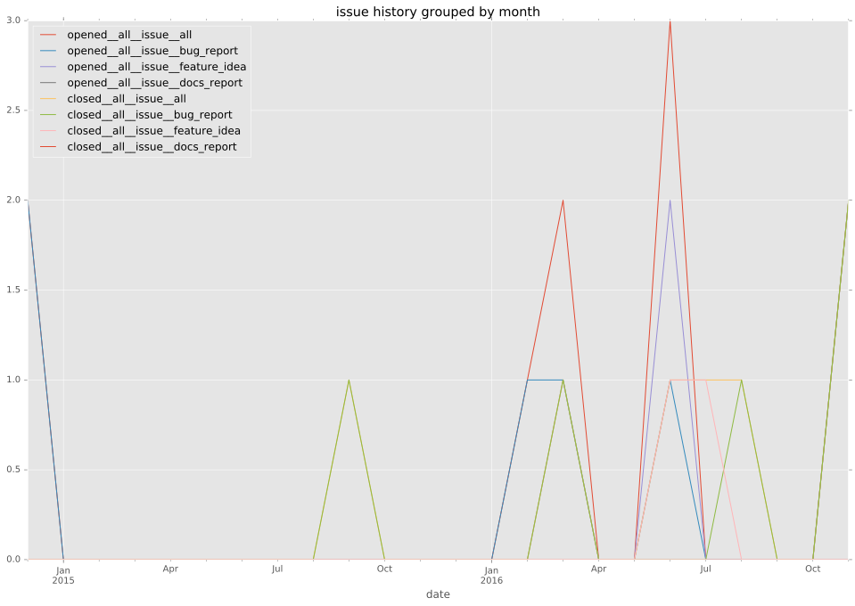
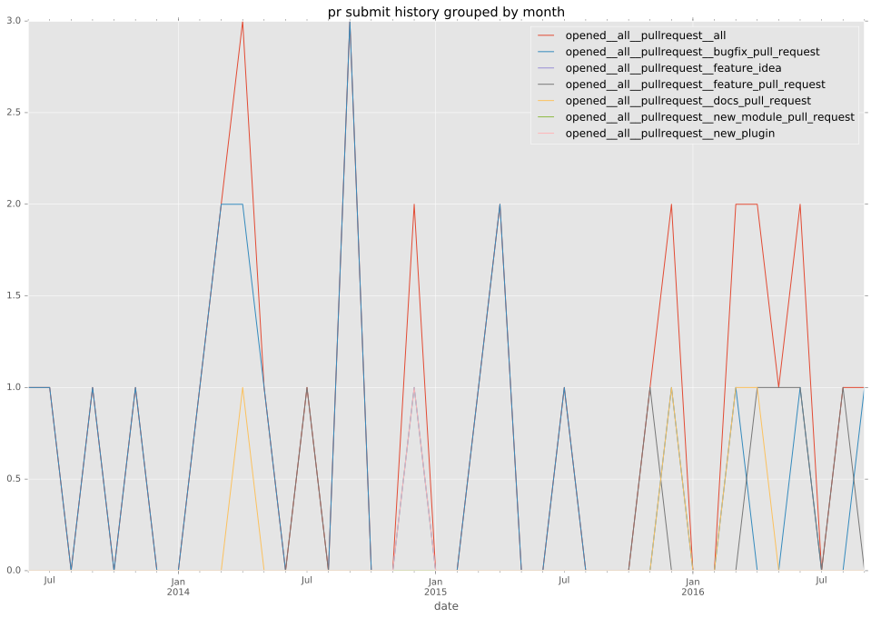
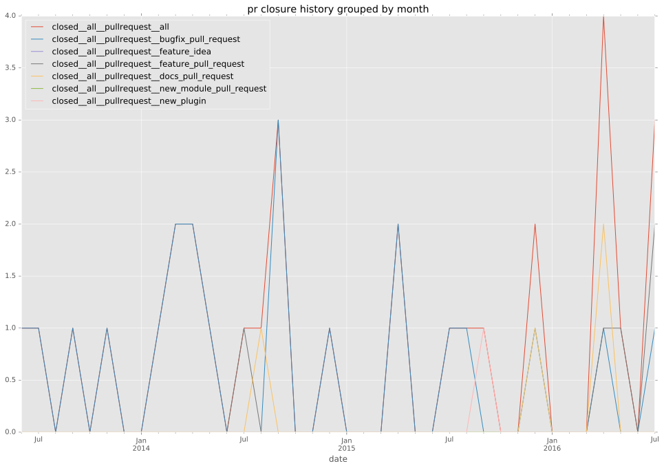

authors
- barnabycourt
maintainers
- barnabycourt
- alikins
contributors
- mpdehaan : 15 commits
- dlbewley : 2 commits
- gundalow : 2 commits
- ktdreyer : 1 commits
- nixpanic : 5 commits
- barnabycourt : 1 commits
- jhutar : 7 commits
- jpmens : 4 commits
- mscherer : 3 commits
- detiber : 18 commits
- jctanner : 15 commits
- alikins : 28 commits
- jlaska : 70 commits
- gregdek : 1 commits
- jimi-c : 1 commits
total issue counts
feature pull request: 5
pullrequest: 30
docs pull request: 3
bugfix pull request: 22
feature idea: 4
issue: 8
bug report: 4
issue history

pullrequest history


days open by issue type
bugfix pull request
count: 32
std: 30.3769165066
min: 0
max: 121
median: 2.0
mean: 13.78125
all
count: 48
std: 101.820344408
min: 0
max: 623
median: 3.0
mean: 40.6458333333
pullrequest
count: 0
std: nan
min: nan
max: nan
median: nan
mean: nan
docs pull request
count: 5
std: 53.5331672891
min: 0
max: 101
median: 5.0
mean: 42.4
feature pull request
count: 6
std: 56.6124250202
min: 0
max: 143
median: 50.0
mean: 57.1666666667
feature idea
count: 2
std: 24.7487373415
min: 0
max: 35
median: 17.5
mean: 17.5
issue
count: 0
std: nan
min: nan
max: nan
median: nan
mean: nan
bug report
count: 3
std: 310.194025302
min: 3
max: 623
median: 294.0
mean: 306.666666667
closures grouped by total days open